Antes de comenzar
Selecciona tu grupo y tu nombre.
Trabajarás en dupla durante las actividades, pero la comprobación final será individual.
Aprendemos a repetir instrucciones
Ciencias de la Computación · 7.º
Descubre cómo hacer que una computadora repita instrucciones sin escribirlas muchas veces.
Selecciona tu grupo y tu nombre.
Trabajarás en dupla durante las actividades, pero la comprobación final será individual.
Estás trabajando como
Etapa 1 · Inicio colectivo
Queremos que un programa escriba «Hola» cinco veces.
Ya conoces print(). Mira cómo podemos resolverlo.
print("Hola")
print("Hola")
print("Hola")
print("Hola")
print("Hola")Hola Hola Hola Hola Hola
¿Qué pasaría si necesitáramos escribir «Hola» treinta veces?
Podemos utilizar una estructura de repetición llamada for.
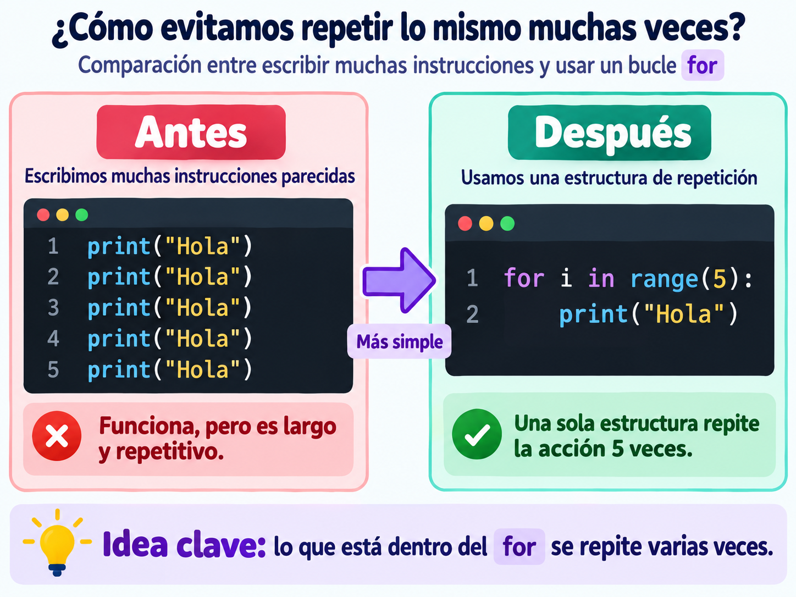
for i in range(5):
print("Hola")
Lo que colocamos dentro del
for se repite cinco veces.
Etapa 2 · Exploración guiada
Observa los bloques y descubre cómo funciona una repetición.
En EduBlocks, selecciona la categoría Loops.
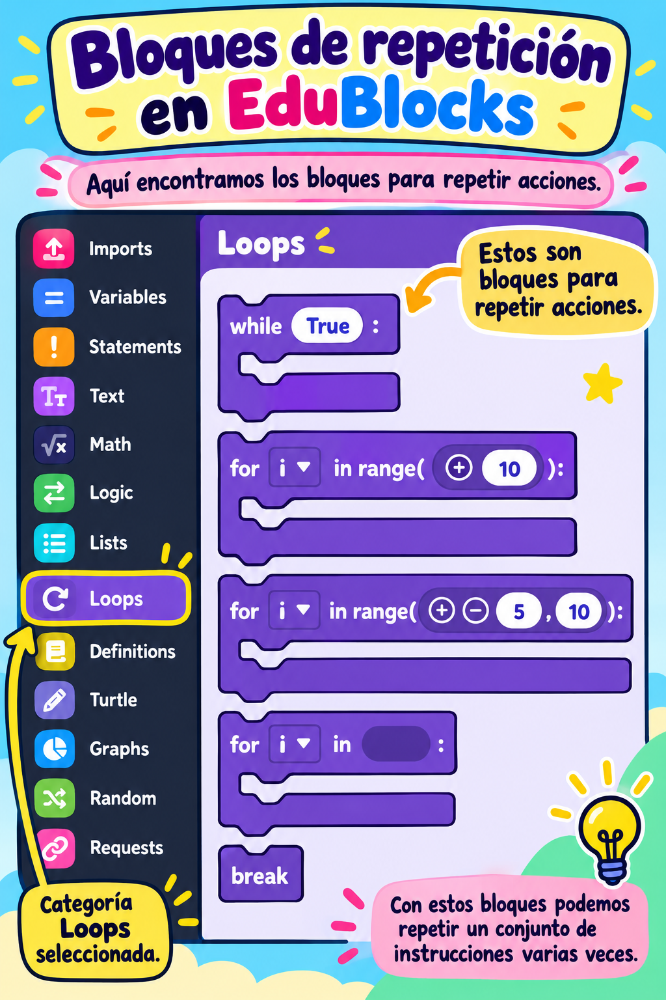
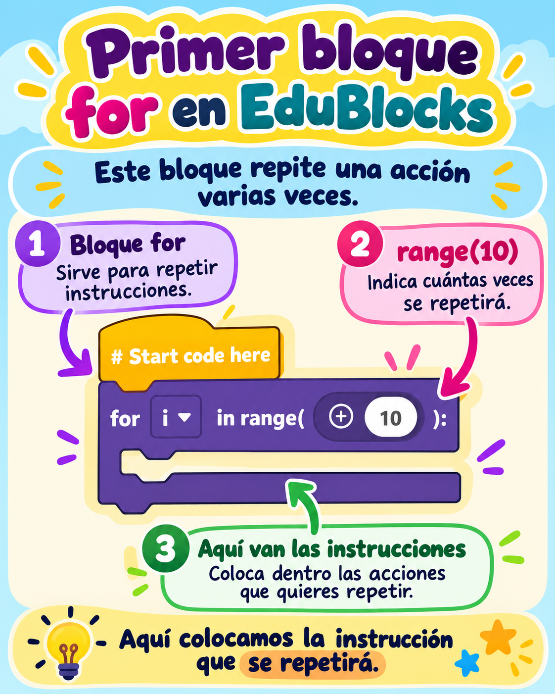
range(5) significa que el bucle realizará cinco
vueltas.
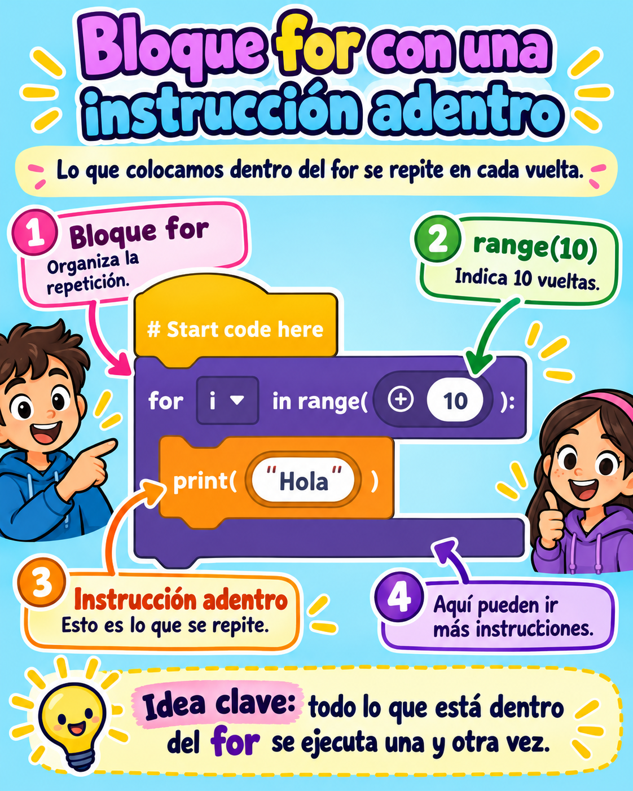
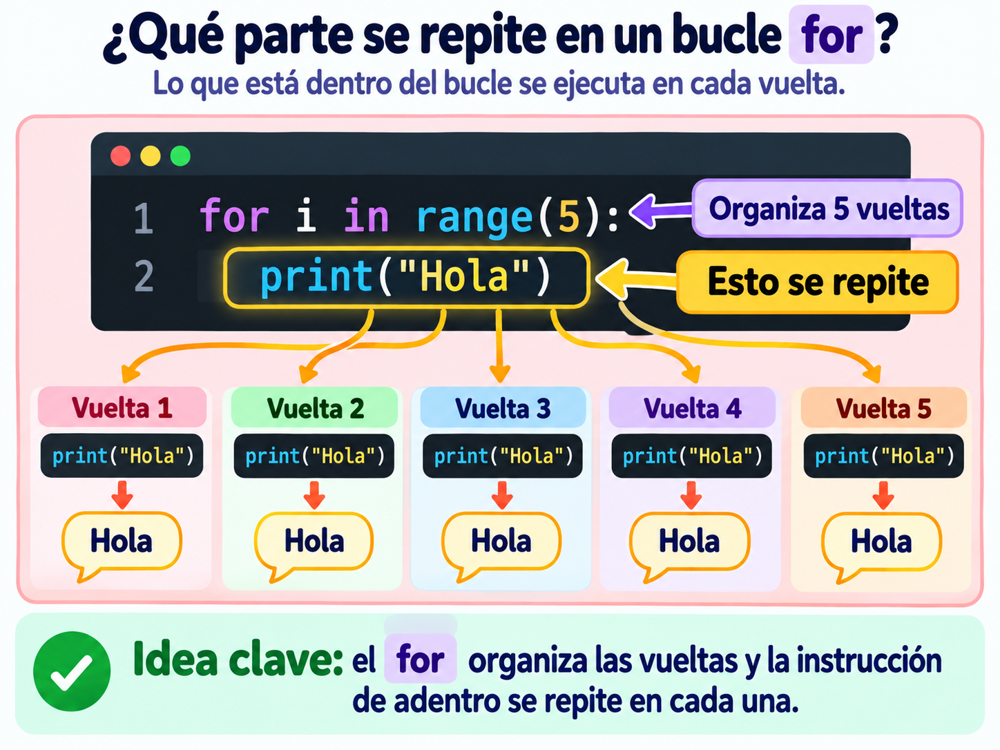
for i in range(4):
print("Hola")Cambia la cantidad de vueltas. Luego ejecuta el programa paso a paso.
for i in range(5):
print("Hola")Todavía no ejecutaste ninguna vuelta.
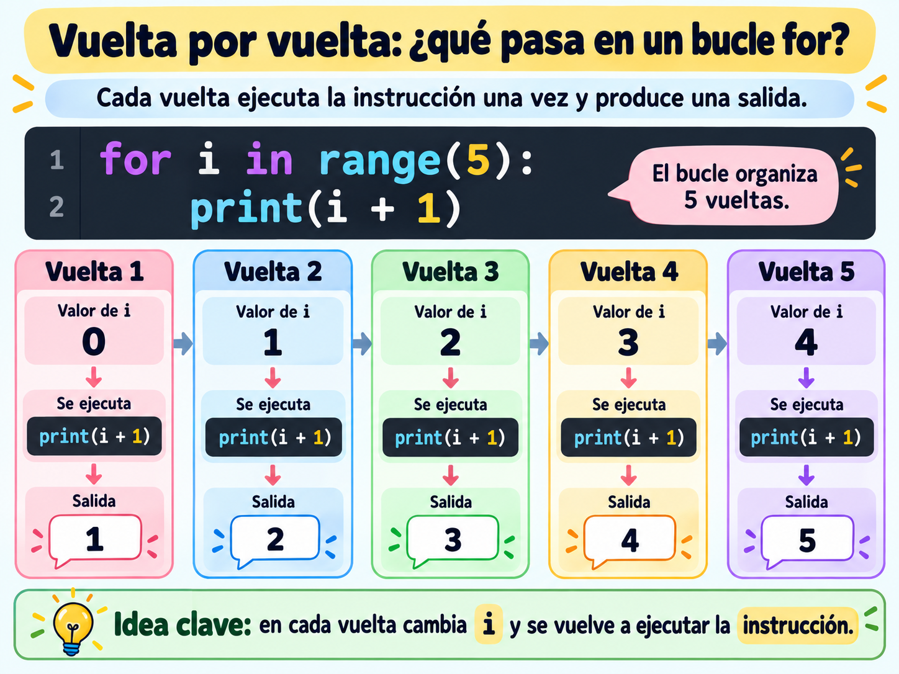
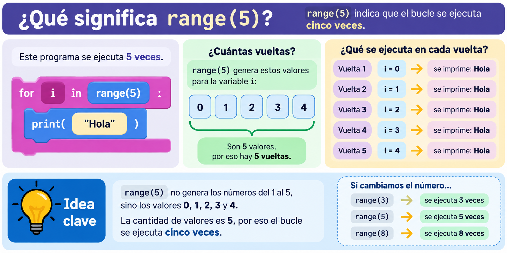
Etapa 3 · Taller en duplas
Construye un programa que utilice
for para repetir instrucciones.
Piloto: manipula los bloques. Navegante: lee los pasos y comprueba.
Cuando lo indique el docente, intercambien los roles.
Puedes cambiar de recorrido si necesitas más ayuda o quieres un desafío mayor.
Selecciona uno de los tres recorridos para comenzar.
Prueba la misión propuesta en tu recorrido. Utiliza las pistas si las necesitas.
Selecciona un recorrido para ver tu misión.
Abrir EduBlocks ↗EduBlocks se abrirá en otra pestaña. Regresa aquí cuando termines de probar.
Esta confirmación es del equipo. La página no comprueba automáticamente el código.
Observa el programa y piensa por qué no hace lo que esperamos.
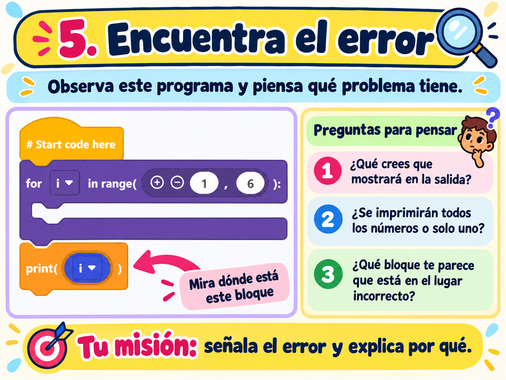
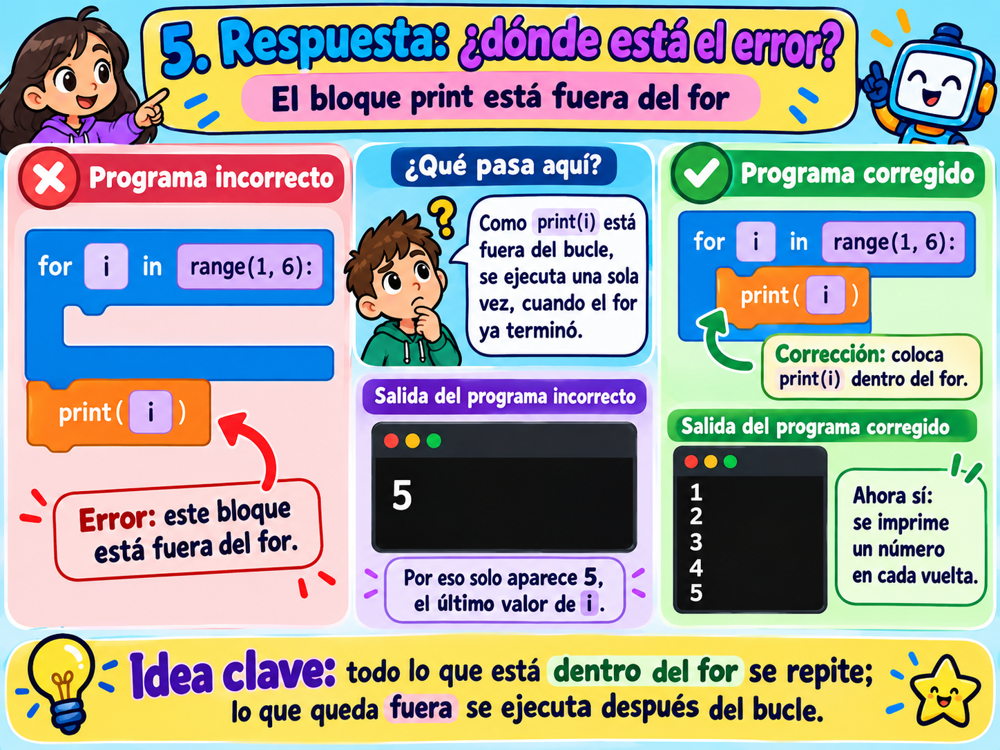
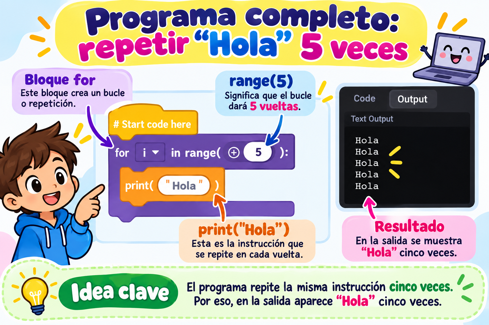
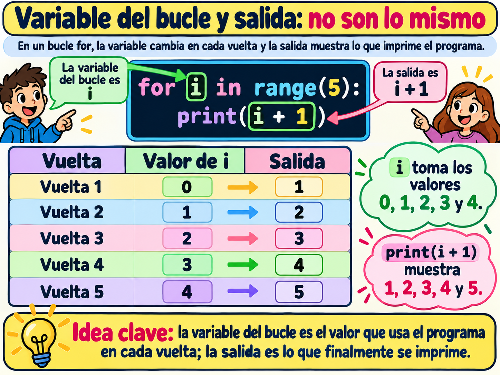
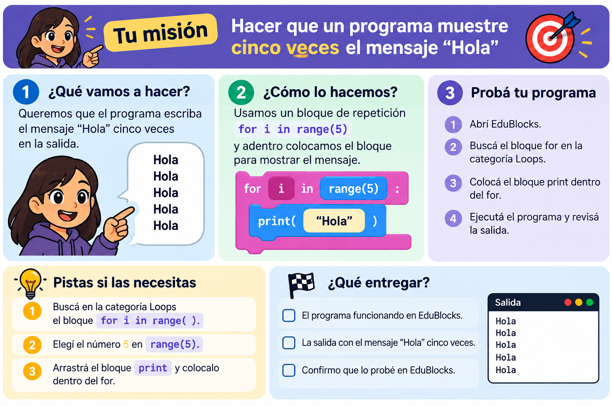
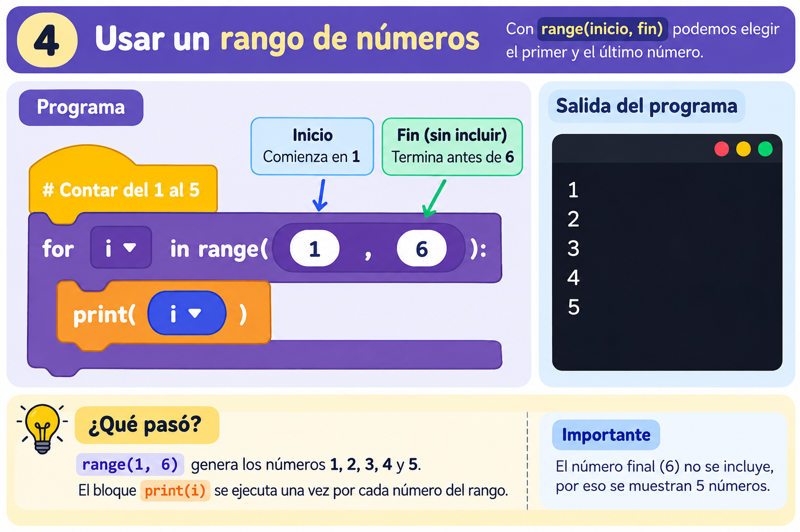
Etapa 4 · Trabajo individual
Ahora responde individualmente. Puedes pensar con calma antes de entregar.
Si no podemos utilizar EduBlocks, resolveremos el problema en papel.
range(4).
Qué entregar: la ficha con las vueltas representadas y tus respuestas.